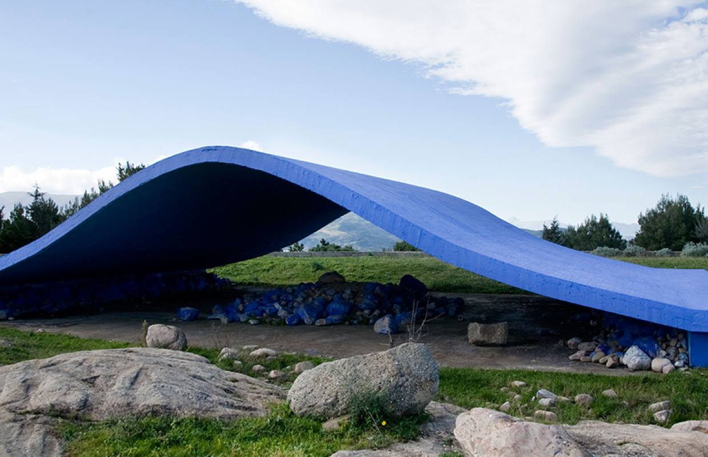

Energia Mediterranea
Scopri l'artista
L'opera di Antonio Di Palma, realizzata nel 1990, è un lenzuolo di cemento armato dipinto di blu acceso. Di Palma, pittore e scultore italo-canadese, si distingue per le sue installazioni ready made e interventi sul territorio, ispirandosi a figure come Duchamp, Kandinskij, Mondrian e Albers.
L'opera, lunga 20 metri e alta 5, caratterizza il panorama di Motta D'Affermo, donando al luogo l'atmosfera della brezza marina. Simula il movimento di una vela gonfiata dal vento e ricorda le onde del mare. La superficie in cemento armato, di colore Blu Klein, offre una visione essenziale, richiamando il ritmo del mare senza impattare e integrandosi con il paesaggio circostante.
L'onda è praticabile, invitando i visitatori a viverla e attraversarla. Sotto la curva di cemento, ciottoli dipinti di blu richiamano i fondali marini. Energia Mediterranea è la quinta opera della Fiumara d'Arte, situata poco fuori Motta D'Affermo, e rappresenta un guizzo di energia nel mezzo della natura selvaggia.
Per raggiungere l'opera, situata su un poggio naturale vicino a Motta D'Affermo, si consiglia di seguire le indicazioni dalla strada statale 113 in direzione Messina, prendendo la deviazione a destra dopo circa 3 chilometri fuori dal paese. Se parte del percorso completo della Fiumara d'Arte, la successiva tappa potrebbe essere l'installazione "38° Parallelo Piramide".